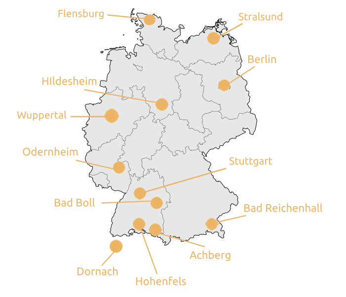

Der 29.6.2025 ist der Feiertag der "Dreigliederung des Sozialen Organismus",
Eine Grundforderung unserer Zeit ist die Schaffung von gesellschaftlichen Formen, die Kreativität, Mitverantwortung und
Direkte Demokratie möglich machen.
Dies kann durch die Selbstverwaltung der 3 Hauptbereiche Kultur, Staat und Wirtschaft
bewirkt werden, allerdings erwachsen daraus unzählige Details, denen ein allgemeines
Gespräch entscheidend weiter helfen wird.

Durch Begegnungen, Feste, Vorträge (Filmen), Tanz und Musik, Wanderungen, Workshops oder schlichten Gesprächs/Lesekreisen wird dies gefördert.
Einzelne Orte und Zeiten können hier eingesehen sowie gemeldet werden
Wegen der Fülle und Spontanität können hier nur einge Veranstaltungen platziert werden
Zahlreiches Weitersagen ist die beste Grundlage allseitiger Verständigung!
An diesen Orten gibt es Zentren für soziale Dreigliederung: (mehr Infos)
